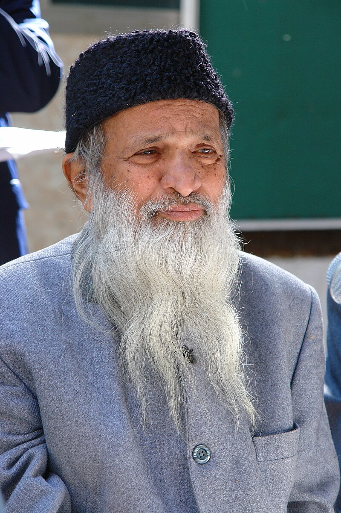

Abdul Sattar Edhi
Abdul Sattar Edhi was a prominent Pakistani philanthropist and humanitarian who dedicated his life to helping those in need

Abdul Sattar Edhi (February 1928 – 8 July 2016) was a Pakistani humanitarian, philanthropist and ascetic who founded the Edhi Foundation, which runs the world's largest volunteer ambulance network, along with various homeless shelters, animal shelters, rehabilitation centres, and orphanages across Pakistan.
Few lines about Abdul Sattar Edhi
- Early Life and Humble Beginnings: Abdul Sattar Edhi was born on January 1, 1928, in Gujarat, British India. He belonged to a modest family and experienced financial struggles during his childhood.
- Founding the Edhi Foundation: Edhi founded the Edhi Foundation in 1951 with a mission to provide healthcare, social services, and humanitarian aid to the underprivileged and marginalized segments of society.
- Expanding Humanitarian Services: Over the years, the Edhi Foundation expanded its services to include ambulances, hospitals, dispensaries, orphanages, morgues, and rehabilitation centers, catering to diverse needs across Pakistan.
- Largest Ambulance Network: The Edhi Ambulance Service, established by Edhi, became the world's largest volunteer ambulance network, providing free emergency medical assistance to those in need.
- Embracing All Faiths and Backgrounds: Edhi's work transcended religious, ethnic, and political boundaries. He firmly believed in helping humanity as a whole, without discrimination based on religion, caste, or nationality.
- Personal Sacrifices: Edhi led a simple lifestyle, often wearing a simple gray tunic and sleeping in a small room attached to the office of his foundation. He and his family dedicated their lives to serving others.
- Contributions: Edhi himself was known to live frugally and donated most of his earnings to the Edhi Foundation. His selfless dedication inspired countless others to contribute to the cause.
- National and International Recognition: Edhi's remarkable humanitarian efforts were recognized globally. He received numerous awards, including the Ramon Magsaysay Award, the Lenin Peace Prize, and the Nishan-e-Imtiaz.
- Legacy and Continuing Impact: Even after his passing, the Edhi Foundation continues to serve as a symbol of humanitarianism in Pakistan, providing vital services to millions of people in need.
- Inspiration for Future Generations: Abdul Sattar Edhi's life and work serve as an inspiration for individuals and organizations worldwide, reminding us of the power of compassion and selfless service in transforming lives.
"Empty words and long praises do not impress God. Show Him your faith by your deeds."
-- Abdul Sattar Edhi